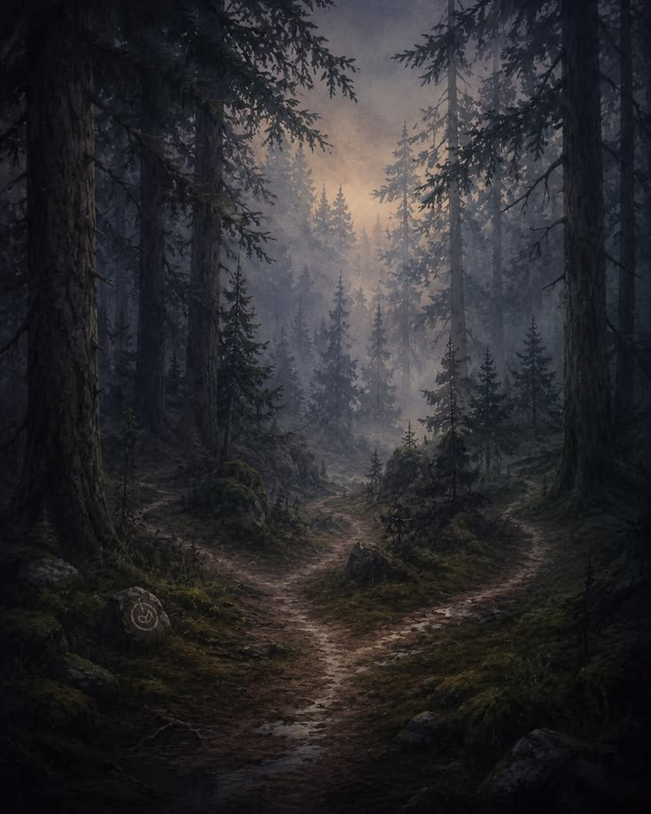

The left path has been marked by other adventurers so that they cant lose their way upon returning from venturing within. You were told not to stray from that path by the townsfolk. The middle path leads to unventured areas that are said to be too dangerous. The fog blocks your vision and you cant see your own hands its so thick. The path fizzles out upon getting to the entrance of this unexplored area. The right path is said to lead to an abandoned town that could possibly give more information. But no one knows why it was abandoned or where the people went. Not wanting anything to do with the forest there were no investigations.